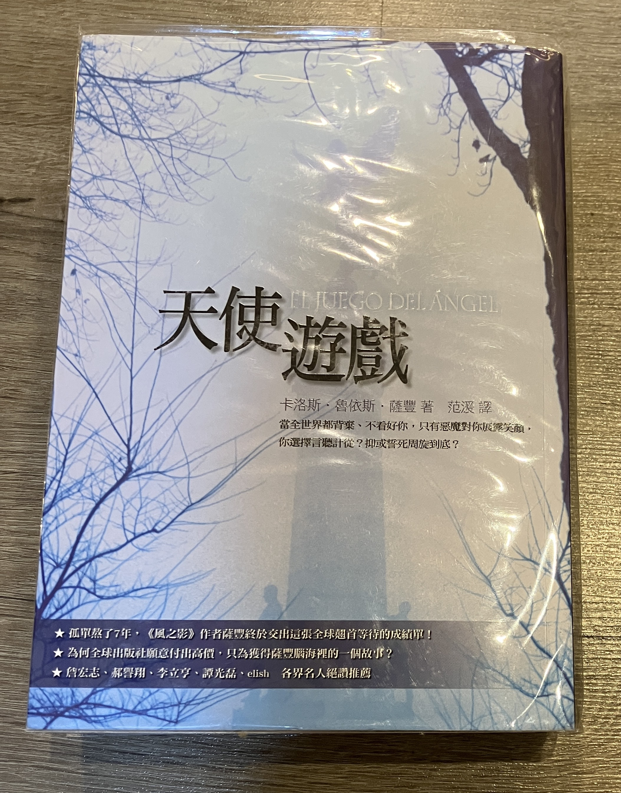

天使遊戲-卡洛斯·魯依斯·薩豐

天使遊戲-卡洛斯·魯依斯·薩豐是我很喜歡的作家之一，他之前出的小說，例如風之影、靈魂迷宮、天空的囚徒，都是讓我愛不釋手。但是隨著小孩漸漸成長，能夠讀書/讀小說的時間越來越少，即便有電子書閱讀器這樣方便的途徑，但是要靠上班通勤的時間閱讀小說，而就是一件吃力且奢侈的事情。直到後來再Haodoo網站上發現有天使遊戲的電子書，加上現在我已經改用聽書的方式來"閱讀"小說，才使得我可以用比較快的速度來看自己喜愛的小說。
天使遊戲一樣是屬於遺忘書之墓系列的小說，儘管這一系列的小說，每一本都聚焦在不同的人物上，所描述的年代也不一樣，但是不管如何發展，都會與遺忘書之墓以及森貝雷父子的書店有關聯。天使遊戲的背景是發生在風之影之前的事件，故事的主角則是大衛馬汀。馬汀小時候與父親相依為命，只是父親因為從軍退伍後沒有適當的工作，只能做一些較低階，甚至遊走法律邊緣的工作，最後因為一場突如其來的槍擊事件而喪命。馬汀後來被報社的老闆衛達收留，並受到極佳的照顧，也因為如此，馬汀也開始在報社嶄露頭角，也開啟他的作家之路。這條作家之路一開始雖然順遂，但是自從他搬去了尖塔之屋居住之後，一切都開始變了樣。不僅如此，在馬汀身邊的人也開始遭遇不幸。包含他最愛的人-克莉絲汀娜，以及馬汀曾經被父親打到頭破血流而流落街頭時，對他伸出援手的森貝雷先生，也捲入這場不幸的事件...
其實遺忘書之墓系列的小說，書中的角色個性都很鮮明，都會讓人印象深刻。像是風之影中的費爾明，就是嘴巴很賤，狗嘴吐不出象牙的人，但實際上十分的膽小，心地確十分善良，為了好友可以兩肋插刀。在天使遊戲中的大衛馬汀，也是直來直往嘴巴不饒人的個性，但是心也是十分的單純，但是與費爾明不同的是，馬汀的命運卻十分的坎坷，是有許多不幸堆積出來的。他愛克麗斯丁娜，但是礙於現實，他必須與她分開，也註定了這個故事會走上悲慘的基調。
當然這個系列的小說，對於巴塞羅納的描述，更是讓人心生嚮往，小弟也是因為這這個系列的小說，對巴塞羅納悠著美好的憧憬。事實上，巴塞羅納真的也是值得一去的地方，走在蘭巴拉大道上，看著人潮熙熙攘攘，遙想著100年前巴塞羅納，是否也是這麽讓人嚮往，還是就像小說講的一樣，是一個充滿詛咒和不幸的城市呢？
延伸閱讀:
Kindle app-使用iOS語音功能來"聽書"[Kindle]使用Calibre+DeDRM，幫你去除亞馬遜(Amazon)電子書的DRM
[Kindle]讓你的Kindle也可以讀樂天書城（Kobo）的電子書
另外，美國購物代運可參考:
https://a1253247.blogspot.com/p/hopshopgo-vs-spexeshop.html
對板球有興趣的可參考:
https://a1253247.blogspot.com/2022/05/cricket-line-written-by-admin-24-10.html
對生活飲食有興趣，可參考: